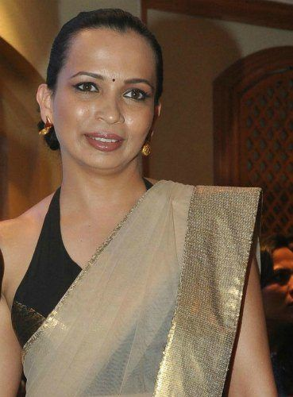

RUJUTA DIWEKAR

Rujuta Diwekar is possibly the country’s most followed nutritionist,
known as much for her A-list clientele (Kareena Kapoor, Saif Ali Khan, Varun Dhawan)
as for her unorthodox views on fitness and diets.
>> Before you start,Here are some ground rules from RUJUTA DIWEKAR
- Don't start your day with tea/coffee
- Eat home-cooked meals as often as possible
- Eat your meals without your phone next to you
- Structure your meals as Pre-breakfast,breakfast
,mid-morning snack,lunch,4-6 pm meal,dinner
SOME FREQUENTLY ASKED QUESTIONS BY THE CLIENT
Question 1- Is there a simple diet plan to lose belly fat? I don’t get enough time to exercise due to a busy schedule?
You've got to "make" time to exercise, especially focussing on cardio.
Areas to work on with food: avoid simple sugars (including jaggery, honey) and fruit juices.
Early dinners by 7:30 pm. Avoid white rice, and keep a 12-hour gap before your next meal (breakfast).
Half your plate should be vegetables and lean protein.
Green tea, cinnamon powder can aid with the fat burning process.
Question 2-What are some of the easily available and affordable superfoods that should be a part of our diet?
1. Sprouts - made from any pulses (mung, horse gram, cowpea).
2 Curd - good source of B12 and calcium, and a natural probiotic, which is great for a healthy digestive system.
3. Green leafy vegetables (drumstick leaves, amaranth, methi) - good iron and vitamins.
4. Pomegranate and guava - rich in vitamin C, which is anti-inflammatory and great for the skin.
5. Chia seeds/almonds/walnuts - Omega 3 rich
Question 3- What are some of the multivitamins women between the ages of 20-30 and 30-40 should take?
For those between 20-30 years – focus on eating balanced and healthy meals.
For those between 30-40 years – multivitamins that provide approximately 30-40 percent of DRI (daily recommended index).
Multivitamin brands (for women): Revital Women, Apollo Multivitamin for Women and Healthkart Multivitamin for women. It's important to do a blood test and then make the right choice.
Question 4-When the body's metabolism slows down as we age, how should we take care of our diet?
Focus on
1. Quantity - Check portions sizes and avoid high-calorie foods. Food intake should be lesser.
2. Protein - Helps retain muscle mass, which boosts metabolism. This also keeps one fuller.
3. Easily digestible foods - Avoid any foods that cause bloating. Ginger and cumin seeds support digestive health.
4. Hydration - Water and green tea. Green tea contains antioxidants that help boost metabolism.
Question 5-As you approach your 30s, what should your diet and exercise regime be like?
Have a balanced diet with plenty of vegetables and fruits, cereals and pulses, dairy products, and include nuts in moderate quantities. Follow an exercise routine that includes both cardio and strength training exercises 4-5 times a week.